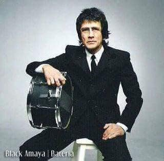
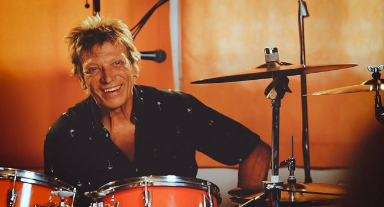
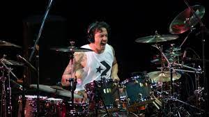
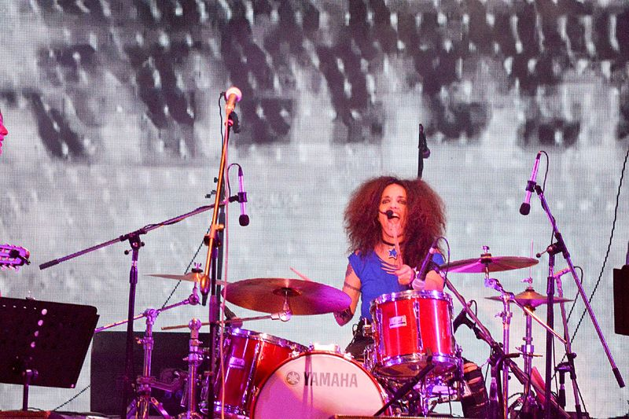
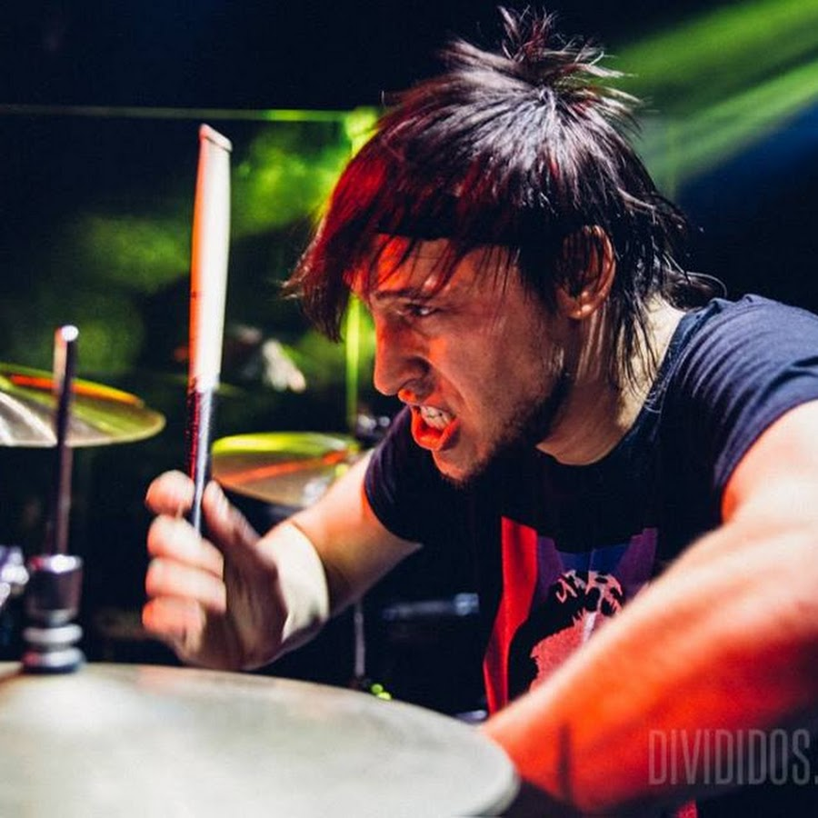
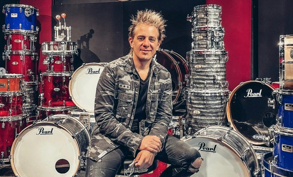
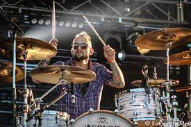
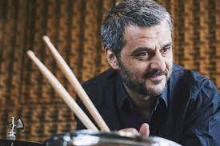

A continuacion les presentaremos una pequeña pabla con lo principales bateristas Argentinos
| Baterista | Foto | Cuidad | Año de Nacimento | Genero | Bandas | Participaciones |
|---|---|---|---|---|---|---|
| Carlos Alberto Ficicchia |  |
Buenos Aires | 27 de Marzo de 1963 | Rock Alternativo | Soda Stereo | Plum (1994-1997) |
| Juan Carlos Black Amaya |  | Buenos Aires | 20 de agosto de 1950 |
|
Pappo's Blues |
|
| Michel Peyronel |  | Bahia Blanca | 10 de septiembre de 1957 |
|
|
|
| Martin Carizzo |  | Buenos Aires | (1972 - 2022) |
|
|
|
| Andrea Alvarez |  | Buenos Aires | 23 de mayo de 1962 | Rock Alternativo | Rouge |
|
| Catriel Ciavarella |  | Buenos Aires | 1 de septiembre de 1979 |
|
Divididos | MAM (1999) |
| Fernando Gabriel Scarcella |  | Buenos Aires | 6 de septiembre de 1975 | Heavy Metal |
|
|
| Andrés Vilanova |  | España | 27 de agosto de 1979 | Rock Alternativo | Carajo |
|
| Daniel Piazzolla |  | Buenos Aires | 10 de Mayo de 1972 | Jazz | Escaladrum |
|